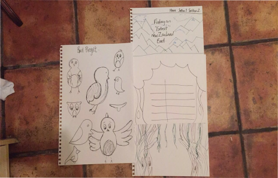
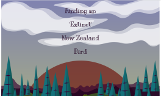

The Extinct New Zealand Bird Website
Breif
In this part of my university work, we were asked to create a single page website based on a piece of text that we had been given. We were asked to narrate the text, using our skills to tell a story throughout the webpage.
Approach
I started off by marking up the text that we had been given using html5. Then I put pen to paper and started designing the structure and layout of my website, I drew out different design and ways in which I would like the website to look.
I researched the bird that the website was about, and from there based the colours of my website around the bird, I wanted it to be bright and full of colour.
From there I moved to Adobe illustrator to start designing my website on the computer, I then added ccs3 to my site.
Outcome
Below is a link to my finished website on my Github account.
 Bird Website